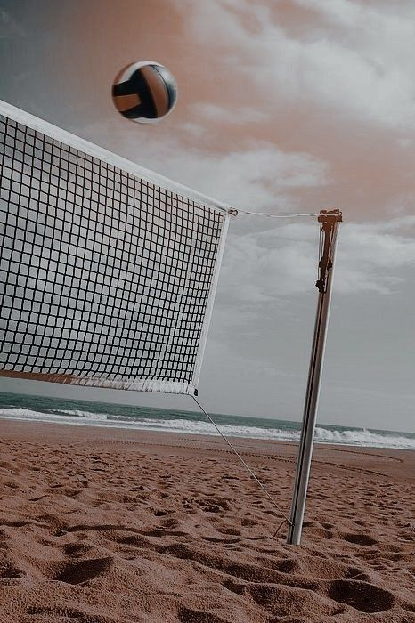

J'ai découvert ce sport là grâce à ma cousine. Puis au moment ou j'ai touché cette balle multicolore, je me suis rendue compte que ce sport là était celui qui me correspondait. Je suis rentrée en juillet 2023 au club de volley appelé Falcons et c'est ensuite devenu comme une nouvelle maison.
J'ai joué quelques temps là-bas avant de réussir à participer à un tournoi. C'était ma première fois jouant contre des adversaires en public, et cela m'a mis dans un état de strees, mais grâce à mes amies j'ai pu me concentrer et joué correctement.
Le 31 janvier 2023 je me suis rendue compte sur Agora que j'avais une possibilité d'échange vers France. La première fois que j'ai vu sa photo jai ressenti une connexion super speciale et j'ai été sûre qu'on allait s'entendre super bien .

Depuis qu'on s'est vue on est devenue inséparables et pour moi c'est plus qu'une simple amie; c'est une soeur que je voudrais jamais perdre.

On a voyagé ensemble et maintenant on est l'une pour l'autre.
Lili aime beaucoup Cali et on a commencé à sortir avec mes amis et faire beaucoup de bêtises.